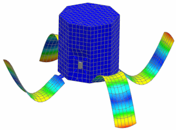

In this tutorial, you will use 0D, 1D, and 2D meshes to represent a satellite and its internal equipment components and payload. To represent the satellite, you will use these NX features:
Concentrated mass and rigid link elements to represent the equipment components
Mesh mating conditions to define footprints for the equipment components within the surrounding mesh
2D shell elements to mesh the outside surfaces
Mesh collectors and physical property tables to organize the FEM data
Edge-to-edge gluing to connect the meshes for the solar panels to the mesh for the satellite walls.
After defining the model, you will solve it as a modal analysis to capture the natural frequencies.
Launch the 0D, 1D, and 2D meshing activity.